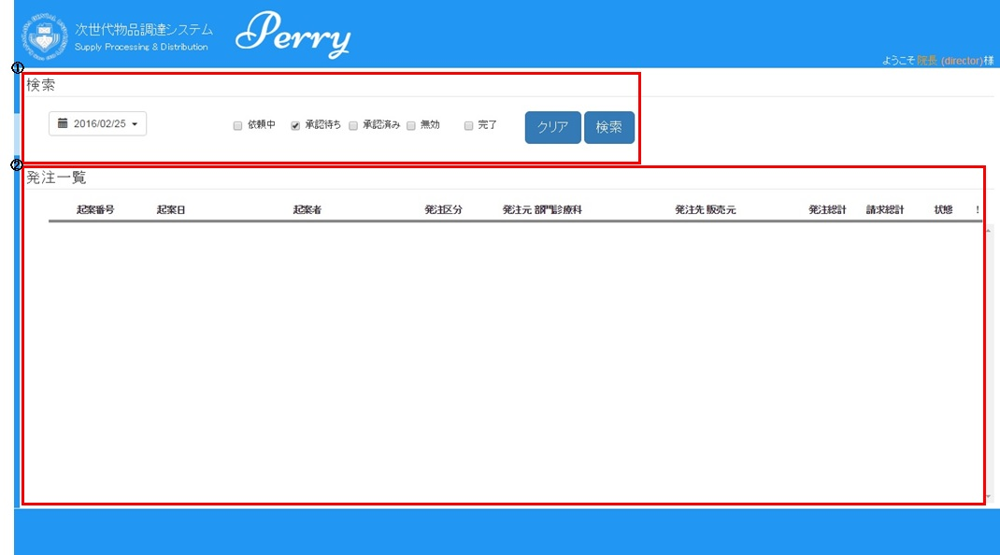
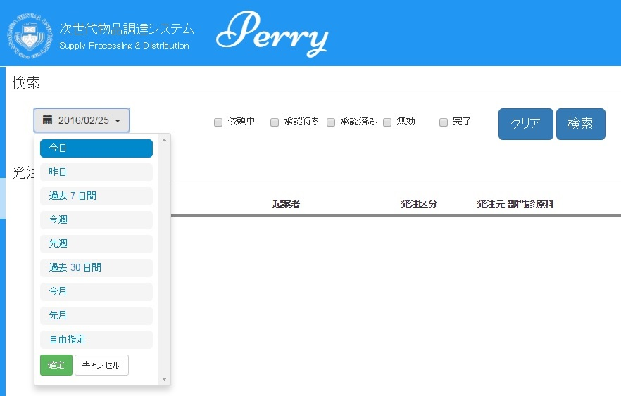
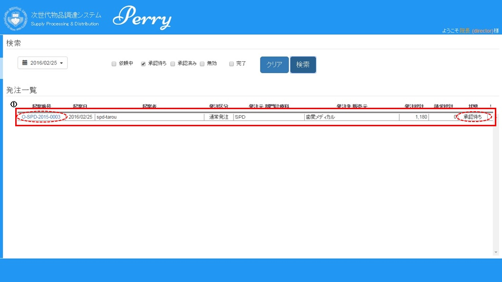
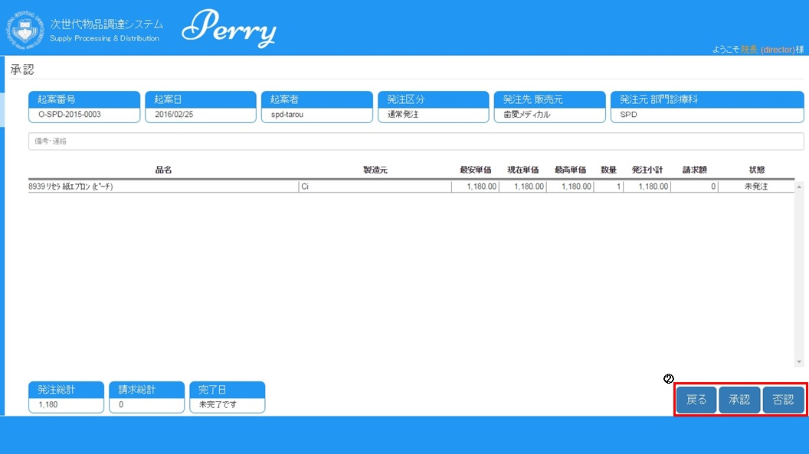
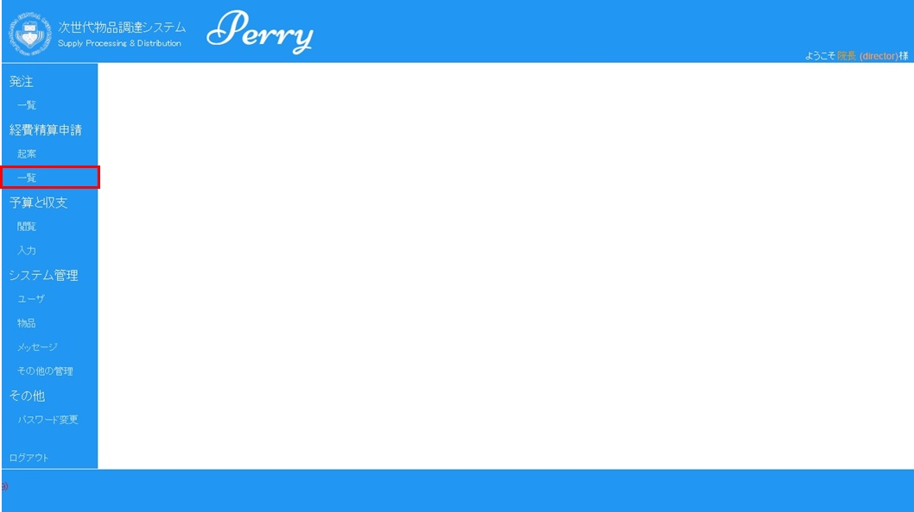
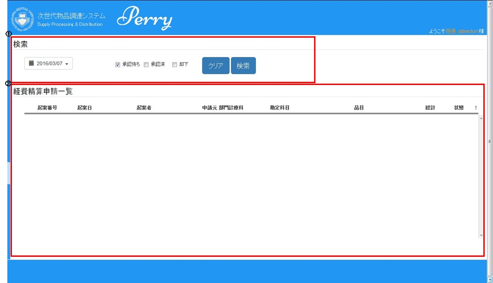
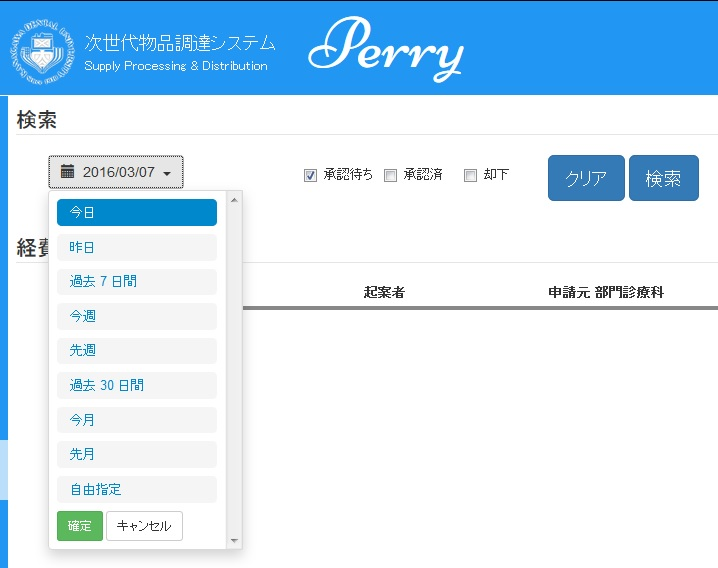
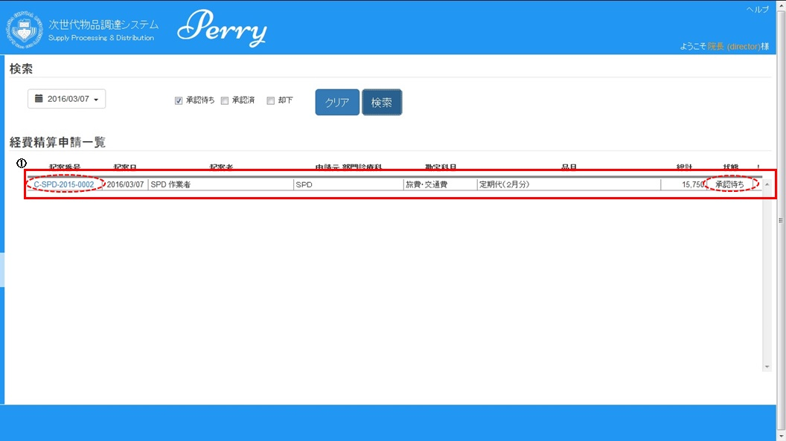
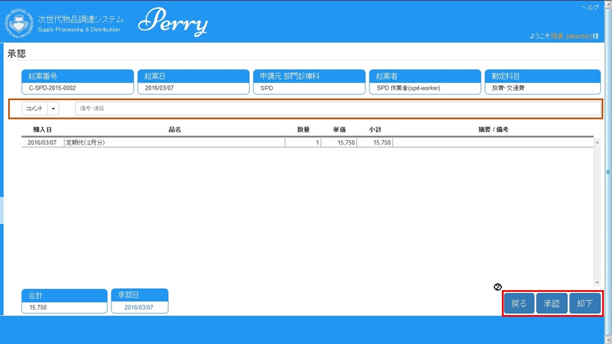

◇発注起案を確認します。
ナビゲーションエリアより「発注」の”一覧”をクリックします。
◇発注一覧画面が表示されます。
①検索エリア：初期値は、日付は表示された現在日付、状態は、”承認待ち”にチェックが入っています。日付と状態でデータの絞り込みが可能です。
②発注一覧表示エリア：”検索”をクリックされた場合、検索条件に合致した情報が表示されます。

◇検索エリアで表示条件を設定します。
①検索条件を設定して、”検索”をクリックします。検索条件に合致した情報が表示されます。
②”クリア”をクリックすると、検索条件が初期値になります。

①状態が”承認待ち”のレコードの”起案番号”をクリックします。

②内容を確認します。
・内容が宜しければ、”承認”をクリックします。確認メッセージが表示されますので、”OK"をクリックしてください。その後、発注一覧画面へ戻ります。
・内容が宜しくなければ、”否認”をクリックします。確認メッセージが表示されますので、”OK"をクリックしてください。その後、発注一覧画面へ戻ります。
・何もしない場合は、”戻る”をクリックします。発注一覧画面へ戻ります。

前のページに戻る
◇経費精算申請起案を確認します。
ナビゲーションエリアより「経費精算申請」の”一覧”をクリックします。

◇経費精算申請一覧画面が表示されます。
①検索エリア：初期値は、日付は表示された現在日付、状態は、”承認待ち”にチェックが入っています。日付と状態でデータの絞り込みが可能です。
②経費精算申請一覧表示エリア：”検索”をクリックされた場合、検索条件に合致した情報が表示されます。

◇検索エリアで表示条件を設定します。
①検索条件を設定して、”検索”をクリックします。検索条件に合致した情報が表示されます。
②”クリア”をクリックすると、検索条件が初期値になります。

①状態が”承認待ち”のレコードの”起案番号”をクリックします。

②内容を確認します。
・内容が宜しければ、”承認”をクリックします。確認メッセージが表示されますので、”OK"をクリックしてください。その後、経費精算申請一覧画面へ戻ります。
・内容が宜しくなければ、”コメント”、”備考・連絡”欄に却下理由を記述し、”却下”をクリックします。
確認メッセージが表示されますので、”OK"をクリックしてください。その後、経費精算申請一覧画面へ戻ります。
・何もしない場合は、”戻る”をクリックします。経費精算一覧画面へ戻ります。

前のページに戻る